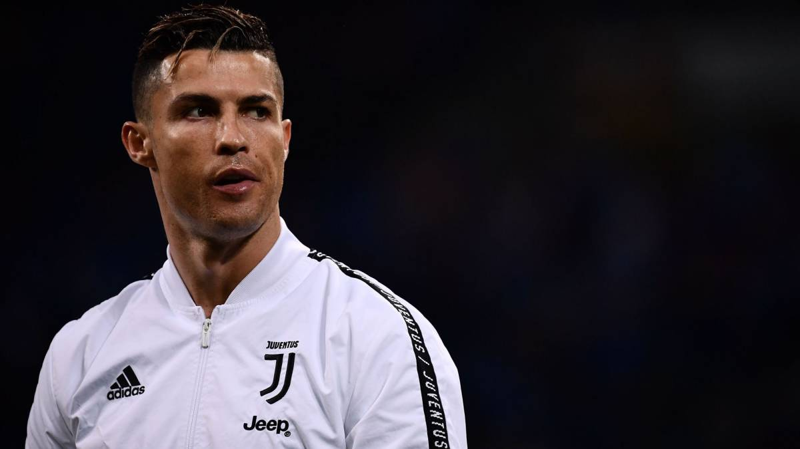

Cristiano Ronaldo returned to training with Juventus in Turin on Tuesday after an absence of over two months because of the coronavirus pandemic. The 35-year-old drove himself into the Juventus Training Centre in a Jeep with tinted windows.
The five-time Ballon d'Or winner will undergo medical and physical tests before joining up with his teammates in training, according to media reports.
Juventus players returned to individual training on May 4, the day Ronaldo returned to Italy after spending lockdown in his native Portugal. For the past two weeks, he has been in quarantine in his villa in Turin.
Ronaldo played in Juventus's last Serie A game before the season was suspended, a 2-0 win over Inter Milan behind closed doors at the Allianz Stadium on March 8.